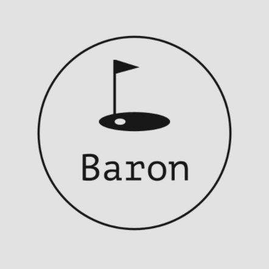
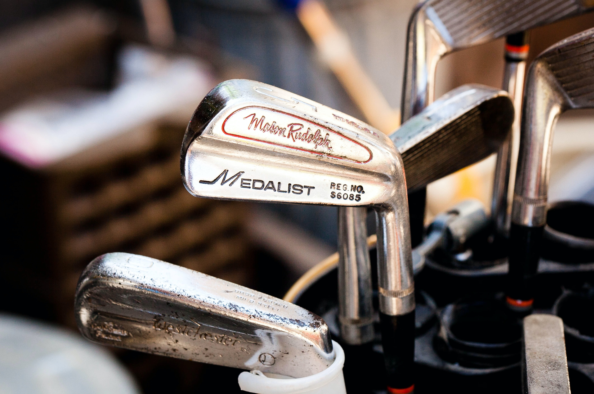
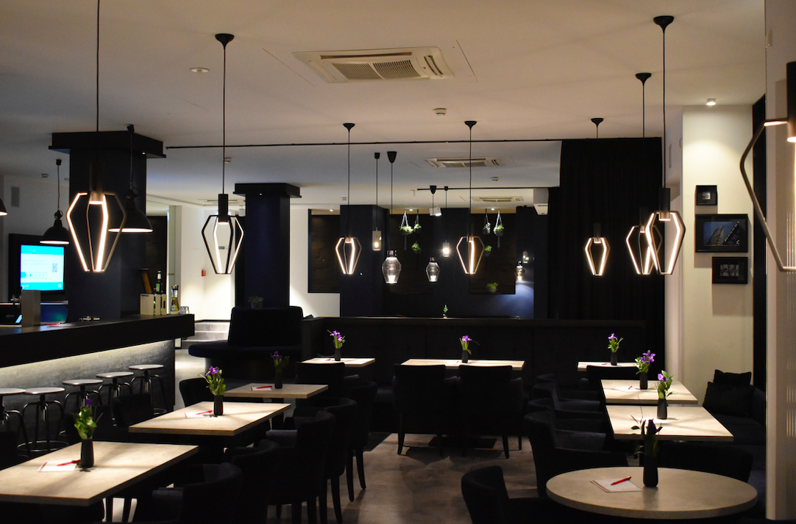
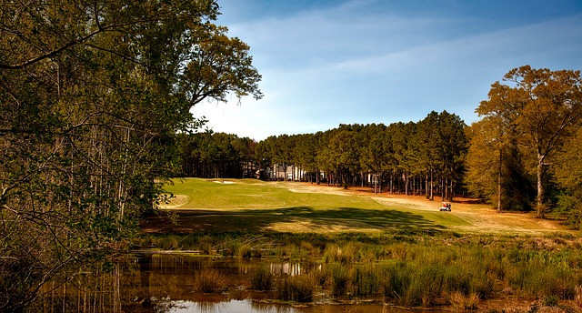

<!--
Andrew Crandall
CWB 110
M3A1
Title: Home Page
Summary: The home page for Baron Golf website
-->


<DOCTYPE html>
<html>

<head>
	<span lang="en">
	<title>Baron Golf Club Home</title>
	<link rel="stylesheet" type="text/css" href="home.css">
</head>

<body id="hwrapper">

	<div>
		<header class="header">
			 
			<h1>Baron Golf Club</h1>

		</header>
	</div>


	<div class="navigation">
		<ul>

			 <li><a href="home.html">Home</a></li> 
			 <li><a href="courses.html">Courses</a></li>
			 <li><a href="history.html">History</a></li>
			 <li><a href="resturaunt.html">Restaurant</a></li>
			 <li><a href="contact.html">Contact Us</a></li>  
			
		</ul>
	</div>


		<br>
		<br>


	
		<main>


		<div class="side">

			<aside>

				<h2>Pro Shop</h2>

				
	

				<br>
				<br>

				<h2>Restaurant</h2>

				<a href="resturaunt.html">
					
				</a>

			</aside>
		</div>


		<br>
		


		<div class="main">


			<br>
			<h2>About Us</h2>

			<p class="centerText">
		       Baron Golf Club is a place where you come to relax with your friends and family. The place where you are able to enjoy and create new memories! Whether you are playing through a round of golf on one of our three different 9 hole courses, cooling off at our pools on a sunny day, or having dinner at our luxorous resturant, Baron Golf Club is here for you.
		    </p>

		    <br>

		    
		    
		    <br>

		    <p>
		       Established in 1939, Baron Golf has been home to many different PGA Tour tournaments. Competing on our two nines, Rolling Hills, and Sunny Valley, the events have included some of the games greats: Tommy Armour, Phil Mickelson, Tiger Woods, Francis Ouimet, and many more.
		    </p>
			
		    <br>
		    <br>

		    <p class ="centerText">
		    	<!-- 
		    	Centeres this paragraph
		    	-->
		       Golf enthusiasts are able to find three different championship level courses throughout the resort. Designed by the great Ronald Doss, Rolling Hills, Sunny Valley, and The Rye each offer a different and unique experience. All of which allow for amazing views of the Colorado Rockies. In 2019, Baron Golf Club was ranked 3rd as the "Best Public Courses in America".
		    </p>

		    	<audio controls>
				  <source src="baronInformation.m4a">
				  Your browser does not support the audio tag.
				</audio>

		    <br>
		</div>


		<br>


		<div class="hfoot">
			<footer>
	 			 <p>Copyright &copy; <script>document.write(new Date().getFullYear())</script> Andrew Crandall</p>
	    	</footer>
		</div>
			

		</main>
</body>

</html>
